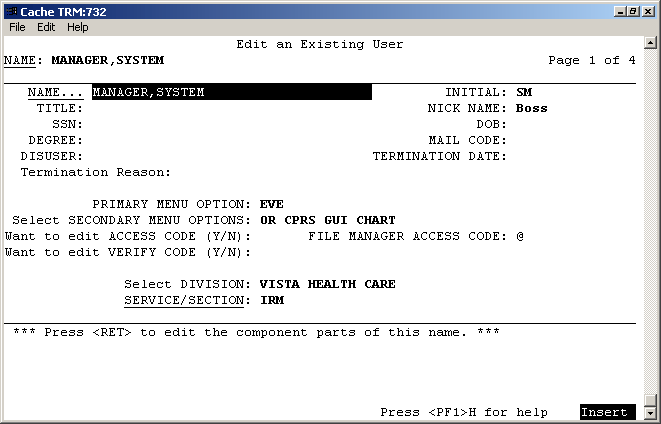
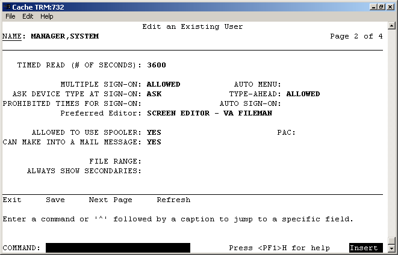

What follows are instructions for installing VistA using Caché
v5 in a Microsoft Windows operating system. The Vista software is
available from the Department of Veterans Affairs' ftp
site as a zipped CACHE.DAT file. (Note: The VA's ftp site is not
compatible with Netscape's ftp. Either use Windows Explorer or FTP
software). These instructions are the result of contributions from
many. Information came from web sites such as www.hardhats.org
and www.seaislandsystems.com,
from the Hardhats
mailing list, from responses to questions addressed to or
provided by specific individuals working outside the list, from
technical support from www.intersystems.com,
from the lessons learned by those who assembled this list and from
the documentation provided with VistA and Caché. Others also
helped to format and set up this document for release and post it on
the HardHats site. There were many testers and reviewers of the
instructions as well. Thank you all and congratulations for finally
getting these instructions done!
Some quick advice for getting yourself out of trouble once you
start working in FileMan. Hitting enter repeatedly will generally get
you back to a prompt you can understand and typing in "^"
will exit the routine. There is very often help available by typing
?, ?? or ???. There are various levels of help at times. A good
default to try is ??. Hitting enter selects defaults. For example, if
you hit enter after this prompt, INPUT TO WHAT FILE: NEW PERSON//, it
will select the NEW PERSON file. Typing ?? would give you a list of
files you could choose instead.
|
32.
|
At User prompt Type "D ^%CD".
|
|
33.
|
At Namespace Type "VISTA" (or use ZN "VISTA").
|
|
34.
|
Type in "D ^ZTMGRSET". It will respond with a few
lines ending with either I think it is VISTA,CACHEWEB. Should I
continue anyway? N// or I think it is VISTA,VISTA. Should I
continue anyway? N// and you should type "Y". It will
respond I think you are using OpenM-NT. Which MUMPS system should
I install? Choose 3.
|
|
|
|

|
|
|
|
35.
|
Several lines later you will be presented with: (Note: VistA
presents a default response followed by "//" as in
VISTA// below. Pressing Enter accepts the default.)
|
|
|
|
|
NAME OF MANAGER'S
NAMESPACE: VISTA// Hit enter.
PRODUCTION (SIGN-ON) NAMESPACE:
VISTA// Hit enter.
NAME OF THIS CONFIGURATION: VISTA// Hit
enter.
|
|
|
|
|
You will have several lines of routines loading finishing with:
|
|
|
|
|
Installing ^%Z
editor
Setting ^%ZIS('C')
Now, I will check your %
globals....
ALL DONE.
|
|
36.
|
Initialize FileMan to set your site name and number by running
"D ^DINIT" from the VISTA> prompt. Say yes to
Intilialize VA Fileman if it isn't already initialized. Give your
site a site name and a 4 digit site number that is preferably not
a round number like 1000 or 5000 so you have less chance of file
number collisions when you make your own files in the future. You
can run D ^DINIT again to see if you changes were successful and
choose Cache/OpenM when offered a choice of MUMPS system you are
using. Also run D ^ZUSET to choose the correct version of ZU for
your users key login routine for the roll and scroll portions of
VistA .
|
|
37.
|
If you have the latest version of Caché with CacheWeb,
you will need to edit the routine ^%ZOSV. To do this, right click
the Caché Cube and choose Studio, File, Change Namespace,
select VISTA then click OK.
|
|
|
|

|
|
38.
|
This step may not be needed in newer versions of VistA, but
check anyway. Highlight LOCALTCP-VISTA, then File, Open and enter
"%ZOSV.INT". Open it and see if the first several lines
are as follows:
|
|
|
%ZOSV
;SFISC/AC - $View commands for Open M for NT. ;12/04/2001 15:30
;;8.0;KERNEL;**34,94,107,118,136,215**;Jul 10, 1995
ACTJ()
;# Active jobs
N Y,% S %=0 F Y=0:1 S %=$ZJ(%)
Q:%=""
Q Y
AVJ() ;#
available jobs
;Return fixed value if version <
2.1.6 (e.i. not Caché)
|
|
|
If the lines are as above, after the line
|
|
|
;Return
fixed value if version < 2.1.6 (e.i. not Cache)
|
|
|
Insert
|
|
|
Q 99 ;Dummy
return for Cache 5
|
|
|
|
|
Now if you made changes, click File, Save and then Build,
Compile. At the bottom of the window you should soon see the
message "Compilation finished successfully."
|
|
|
|
39.
|
In a similar fashion, check to see if you need to edit the
XWBTCPC.INT routine by inserting
'W:XWBOS="OpenM"&(+$$VERSION^%ZOSV()'<5) ! '
after 'I $L(STR)<511 W:($X+$L(STR))>511 ! W STR ', as shown
below. This step may also not be necessary in newer versions
of VistA.
|
|
|
Original line looks like:
|
|
|
I
$L(STR)<511 W:($X+$L(STR))>511 ! W STR Q
|
|
|
New line looks like:
|
|
|
I
$L(STR)<511 W:($X+$L(STR))>511 ! W STR
W:XWBOS="OpenM"&(+$$VERSION^%ZOSV()'<5)
!
Q
|
|
|
|
|
***N.B. For those interested, this is an excerpt from the
hardhats mailing list describing the reason for this step:
|
|
|
|
|
If
you run an RPCBroker application, server opens a new session
with
XWBTCPC routine for the client but it does not return what
it should for
the XUS SIGNON SETUP (volume set, namespace,
device, ...)
Server is hanging in READ command in XWBTCPC
and waiting for a new message
from the client. And client is
still waiting for the return message for
XUS SIGNON SETUP
remote procedure.
The reason was that server doesn't always
flush the buffer without an '!'
after WRITE command. This makes
problems when returning data for remote
procedures which type
is ARRAY or GLOBAL ARRAY.
I made it work by adding an '!'
after WRITE in WRITE+4 label in XWBTCPC routine:
;I
$L(STR)<511 W:($X+$L(STR))>511 ! W STR Q ; the original
line
I $L(STR)<511 W:($X+$L(STR))>511 ! W STR
W:XWBOS="OpenM"&(+$$VERSION^%ZOSV()'<5) ! Q
|
|
|
|
|
This step may be necessary to avoid getting a message telling
you the maximum number of users are now logged in. You can wait to
see if it happens before changing this code. If necessary,
edit XUS.INT after the SET2 "tag", commenting out the
line I $D(^%ZOSF("ACTJ")) X ^("ACTJ") I
$P(XUVOL,U,3),($P(XUVOL,U,3)'>Y) Q 2 with a semicolon as shown
below.
|
|
|
|
|
SET2()
;EF. Return error code
S
XUNOW=$$HTFM^XLFDT($H),DT=$E(XUNOW,1,7)
S X=$P(XOPT,U,14) I
"N"'[X S XUF=(X["R")+1,XUF(.1)="",XUF(.2)=0,XUF(.3)=0
I X["D" S:$D(^XTV(8989.3,1,4.33,"B",XUDEV))[0
XUF=0
K DUZ,XUSER S
(DUZ,DUZ(2))=0,(DUZ(0),DUZ("AG"),XUSER(0),XUSER(1),XUTT,%UCI)=""
I
$G(^%ZIS(14.5,"LOGON",XQVOL)) Q 1
; I
$D(^%ZOSF("ACTJ")) X ^("ACTJ") I
$P(XUVOL,U,3),($P(XUVOL,U,3)'>Y) Q 2
S
X=$G(^%ZIS(1,XUDEV,"XUS")),XU1=$G(^(1)) F I=1:1:15 I
$P(X,U,I)]"" S $P(XOPT,U,I)=$P(X,U,I)
S DTIME=600
I
'$P(XOPT,U,11),$D(^%ZIS(1,XUDEV,90)),^(90)>2800000,^(90)'>DT
Q 8
I $D(XRT0) S XRTN="XUS" D T1^%ZOSV Q
|
|
|
|
|
Don't forget to save and compile any routines you change.
|
|
|
|
40.
|
CLOSE Studio and go back to Terminal and run "D ^%CD"
and enter "VISTA" for the namespace again.
|
|
|
|
|
Now determine the what is called the "BOX:VOLUME pair",
which is really a VOLUME:BOX pair, for your machine. This is done
as follows:
|
|
|
|
|
|
VISTA>D GETENV^%ZOSV W Y
|
|
|
|
|
Here is a sample return:
|
|
|
|
|
VISTA^CACHE^ANTHRAX^CACHE:CACHEWEB
|
|
|
|
|
In this instance, the 4th "piece", assuming ^ is the
divider, is CACHE:CACHEWEB, which is the BOX:VOLUME pair.
ANTHRAX is the name of the computer this was done on, also known
as the NODE. The first CACHE (second "piece")
listed is the VOLUME. VISTA is the UCI (also the directory
name where CACHE.DAT is located). UCI is an old terminology
you do not need to understand, but it helps to know what the UCI
should be. The so called BOX:VOLUME pair is actually the
VOLUME:BOX pair, but it is always referred to as the "BOX
VOLUME pair". In short, this is what the above line
corresponds to:
|
|
|
|
|
UCI^VOL^NODE^BOX:VOLUME
|
|
|
|
|
Jot down your BOX:VOLUME pair for comparison with what you find
as the installation continues to be sure it has been set
correctly. It is very important that it be correct in some
of the parameter files.
|
|
|
|
41.
|
Now to create your own domain. From the VISTA prompt, start VA
FileMan by typing "D Q^DI". At the Select OPTION:
prompt. Type "1". (You can see why you typed 1 if you
type "??" at the option prompt. That will give you the
list of options you can choose from and 1 is ENTER OR EDIT FILE
ENTRIES.) At INPUT TO WHAT FILE: type "DOMAIN" and
accept the ALL// default to EDIT WHICH FIELD. At Select DOMAIN
NAME: enter a local domain name. Substitute an appropriate value
for VISTA.MYDOMAIN.COM in the example below.
NB: If
you are prompted for an ACCESS CODE, press ENTER until you
get back to a simple prompt and enter "S DUZ=1"
before running
"D Q^DI".
|
|
|
|
|
Select OPTION: 1
ENTER OR EDIT FILE ENTRIES
INPUT TO WHAT FILE: NEW
PERSON// DOMAIN
EDIT WHICH FIELD: ALL//
Select
DOMAIN NAME: VISTA.MYDOMAIN.COM
Are you
adding 'VISTA.MYDOMAIN.COM' as
a new DOMAIN
(the 2ND)? No// Y (Yes)
FLAGS: ^
Select
DOMAIN NAME:
|
|
|
|
42.
|
Now to complete the DOMAIN set up by Christening the new
domain. Go back to the VISTA> prompt and type "D
CHRISTEN^XMUDCHR".
|
|
|
|
|
VISTA>DO
CHRISTEN^XMUDCHR
* * * * WARNING * * * *
You
are about to change the domain name of this facility
in the
MailMan Site Parameters file.
Currently, this facility is
named: PLATINUM.VISTA.MED.VA.GOV
You must be extremely sure
before you proceed!
Are you sure you want to change the
name of this facility? NO// YES
Select DOMAIN NAME:
PLATINUM.VISTA.MED.VA.GOV// VISTA.MYDOMAIN.COM
The
domain name for this facility is now: VISTA.MYDOMAIN.COM
PARENT:
4// PLATINUM.VISTA.MED.VA.GOV
TIME ZONE: MDT// PDT
PACIFIC DAYLIGHT
PLATINUM.VISTA.MED.VA.GOV
has been initialized as your 'parent'
domain.
(Forum is
usually the parent domain, unless this is a subordinate
domain.)
You may edit the MailMan Site Parameter file to
change your parent domain.
We will not initialize your
transmission scripts.
Use the 'Subroutine editor' option
under network management menu to add your
site passwords to the
MINIENGINE script, and the 'Edit a script' option
to edit any
domain scripts that you choose to.
|
|
|
|
43.
|
Determine the internal entry of the new domain. Remember this
number as it will be used in subsequent steps. Get back to the
Select OPTION: prompt and enter "INQUIRE" or "5"
(once again, you can type ?? to see the available options and 5 is
INQUIRE TO FILE ENTRIES) then at the Select DOMAIN NAME: prompt,
enter the new domain name you just created. Answer "N"
to STANDARD CAPTIONED OUTPUT and at PRINT FIELD: answer "NUMBER".
The domain number is "printed" to the screen.
If you get the warning here that you do not have a home device,
go to step 97, do what it says there and then come back to this
step.
|
|
|
|
|
Select OPTION: 5
INQUIRE TO FILE ENTRIES
OUTPUT FROM WHAT FILE:
DOMAIN//
Select DOMAIN NAME: VISTA.MYDOMAIN.COM
ANOTHER
ONE:
STANDARD CAPTIONED OUTPUT? Yes// N (No)
FIRST
PRINT FIELD: NUMBER
THEN PRINT FIELD:
Heading (S/C):
DOMAIN LIST//
DEVICE: CONSOLE Right Margin: 80//
DOMAIN LIST
APR 11,2003 10:51
PAGE
1
NUMBER
------------------------------------------------------------------------
3
|
|
|
|
44.
|
From the VISTA prompt repoint the KERNEL SYSTEM PARAMETERS and
RPC BROKER PARAMETERS files to the new domain, go back to the
VISTA> prompt and enter 'S $P(^XTV(8989.3,1,0),"^")=3'
and 'S $P(^XWB(8994.1,1,0),"^")=3' where 3 is the
internal number of the new domain we just created in the previous
step.
|
|
|
|
|
VISTA>S
$P(^XTV(8989.3,1,0),"^")=3
VISTA>S
$P(^XWB(8994.1,1,0),"^")=3
|
|
|
|
45.
|
Then from the VISTA> prompt again start FileMan with "D
Q^DI". At Select OPTION: enter "6" (UTILITY
FUNCTIONS) then select RE-INDEX FILE. At MODIFY WHAT FILE, enter
"KERNEL SYSTEM PARAMETERS". Then do the same for the RPC
BROKER PARAMETERS file. See example below for the rest of the
dialogue.
|
|
|
|
|
VISTA>D Q^DI
VA
FileMan 22.0
Select OPTION: UTILITY
FUNCTIONS
Select UTILITY OPTION: RE-INDEX FILE
MODIFY
WHAT FILE: DOMAIN// 8989.3 KERNEL SYSTEM PARAMETERS
(1 entry)
THERE ARE 13 INDICES WITHIN THIS FILE
DO YOU
WISH TO RE-CROSS-REFERENCE ONE PARTICULAR INDEX? No// (No)
OK,
ARE YOU SURE YOU WANT TO KILL OFF THE EXISTING 13 INDICES? No// Y
(Yes)
DO YOU THEN WANT TO 'RE-CROSS-REFERENCE'? Yes//
(Yes)
...EXCUSE ME, LET ME THINK ABOUT THAT A MOMENT...
FILE
WILL NOW BE 'RE-CROSS-REFERENCED'................
Select
UTILITY OPTION: RE-INDEX FILE
MODIFY WHAT FILE:
KERNEL SYSTEM PARAMETERS// 8994.1 RPC BROKER SITE
PARAMETERS (1
entry)
THERE ARE 5 INDICES WITHIN THIS FILE
DO YOU WISH
TO RE-CROSS-REFERENCE ONE PARTICULAR INDEX? No// (No)
OK,
ARE YOU SURE YOU WANT TO KILL OFF THE EXISTING 5 INDICES? No// Y
(Yes)
DO YOU THEN WANT TO 'RE-CROSS-REFERENCE'? Yes//
(Yes)
...HMMM, HOLD ON...
FILE WILL NOW BE
'RE-CROSS-REFERENCED'......
|
|
|
|
46.
|
Check the VOLUME SET File (#14.5). If you accepted the default
VISTA when you ran ZTMGRSET (see previous
steps), the VOLUME SET File should not need any changes. At
Select OPTION: enter "1" for EDIT OR ENTER FILE ENTRIES.
The choice should be INPUT TO WHAT FILE: VOLUME SET//. Accept the
default if it is VOLUME SET else type "14.5", and at
EDIT WHICH FIELD: ALL// hit enter. At Select VOLUME SET prompt
type "??" to see a list of entries. When asked which
volume set again, type in VISTA or whatever it is exactly as it is
(all caps). Leave TASKMAN FILES UCI: VISTA// as VISTA. The values
should match what is shown below.
|
|
|
|
|
Select OPTION: 1
ENTER OR EDIT FILE ENTRIES
INPUT TO WHAT FILE: VOLUME SET//
14.5 VOLUME SET (1 entry)
EDIT WHICH FIELD:
ALL//
Select VOLUME SET: ??
VISTA
You may enter a new VOLUME SET, if you
wish
Answer should be the name of a volume
set.
When each cpu can have only one
volume set, this is also the cpu name.
Answer will be used in extended global references to reach this
volume.
Select VOLUME SET: VISTA
VOLUME SET:
VISTA//
TYPE: GENERAL PURPOSE VOLUME SET//
INHIBIT LOGONS?:
NO//
LINK ACCESS?: YES//
OUT OF SERVICE?: NO//
REQUIRED
VOLUME SET?: NO//
TASKMAN FILES UCI: VISTA//
TASKMAN FILES
VOLUME SET: VISTA//
REPLACEMENT VOLUME SET:
DAYS TO KEEP OLD
TASKS: 4//
SIGNON/PRODUCTION VOLUME SET: Yes//
Select
VOLUME SET:
|
|
|
|
47.
|
This step is to get the proper value for the BOX-VOLUME PAIR in
the TASKMAN SITE PARAMETERS File. Edit the TASKMAN SITE PARAMETER
File (# 14.7) to update the BOX-VOLUME PAIR. Note that when you
enter a "?" at the BOX-VOLUME PAIR prompt, it tells you
what the correct value should be.
|
|
|
|
|
Select OPTION: 1
ENTER OR EDIT FILE ENTRIES
INPUT TO WHAT FILE: VOLUME
SET// 14.7 TASKMAN SITE PARAMETERS
(1 entry)
EDIT WHICH
FIELD: ALL//
Select TASKMAN SITE PARAMETERS BOX-VOLUME
PAIR: ?
Answer with TASKMAN SITE
PARAMETERS BOX-VOLUME PAIR:
VISTA:CACHE
You may enter a new TASKMAN SITE PARAMETERS, if you wish
Answer must be 3-30 characters in length.
The value for the
current account is VISTA:CACHEWEB
Select TASKMAN SITE
PARAMETERS BOX-VOLUME PAIR: VISTA:CACHE
BOX-VOLUME PAIR:
VISTA:CACHE// VISTA:CACHEWEB
RESERVED: ^
Select
TASKMAN SITE PARAMETERS BOX-VOLUME PAIR:
|
|
|
|
48.
|
Now update the RPC BROKER SITE PARAMETER File.
|
|
|
|
|
Select OPTION: 1
ENTER OR EDIT FILE ENTRIES
INPUT TO WHAT FILE: TASKMAN SITE
PARAMETERS// 8994.1 RPC BROKER SITE PARAMETERS
EDIT
WHICH FIELD: ALL//
Select RPC BROKER SITE PARAMETERS
DOMAIN NAME: VISTA.MYDOMAIN.COM
...OK? Yes// (Yes)
DOMAIN NAME: VISTA.MYDOMAIN.COM//
Select
BOX-VOLUME PAIR: VISTA:CACHEWEB//
BOX-VOLUME PAIR:
VISTA:CACHEWEB//
Select PORT: 9210//
PORT: 9210//
*UCI:
STATUS: STOPPED//
CONTROLLED BY LISTENER
STARTER: YES// N NO
|
|
|
|
49.
|
Now to set up the System Manager user with minimal information.
We will add more information later. At Select OPTION: Type "1"
(Type "??" to see Option 1 if you wish)
|
|
50.
|
At INPUT TO WHAT FILE: Type "200", the number of the
NEW PERSON file.
|
|
51.
|
At EDIT WHICH FIELD: ALL// Type ".01" and hit enter.
It will echo back NAME.
|
|
52.
|
It may respond with finish with NEW PERSON, 2 ENTRIES and then
prompt you.
|
|
53.
|
At THEN EDIT FIELD: Type "ACCESS CODE" and the
computer will finish it with Want to edit access code (Y/N)? Hit
Enter and hit enter until you are prompted with Select NEW PERSON
NAME.
|
|
54.
|
At Select NEW PERSON NAME, Type "MANAGER,SYSTEM" or
whatever you choose.
|
|
55.
|
At Are you adding "MANAGER,SYSTEM" as a NEW PERSON
(the 2nd [or whatever it offers you])? No// type "Y".
|
|
56.
|
It will respond Checking SOUNDEX for matches. No matches found.
NEW PERSON INITIAL:
|
|
57.
|
Type "SM" or whatever you choose.
|
|
58.
|
At Want to Edit ACCESS Code (Y/N): Type "Y". For NEW
PERSON MAIL CODE: hit ENTER.
|
|
59.
|
Then enter an access code. (Type "??" and hit enter
to see what the options are for access codes if you wish.) At
least 6 mixed alphanumeric characters. If not, just type the code
and hit enter.
|
|
60.
|
Retype the code as directed. FileMan will respond OK, Access
code has been changed! The VERIFY CODE has been deleted as a
security measure. The user will have to enter a new one the next
time they sign-on.
|
|
61.
|
At Select NEW PERSON NAME: Hit enter.
|
|
|
|
|
Select OPTION: 1
ENTER OR EDIT FILE ENTRIES
INPUT TO WHAT FILE: RPC
BROKER PARAMETERS// 200 NEW PERSON
(2 entries)
EDIT WHICH FIELD: ALL// .01
NAME
THEN EDIT FIELD: ACCESS CODE Want to
edit ACCESS CODE (Y/N)
THEN EDIT FIELD:
Select NEW
PERSON NAME: MANAGER,SYSTEM
Are you adding
'MANAGER,SYSTEM' as a new NEW PERSON (the 3RD)? No// Y
(Yes)
Checking SOUNDEX for matches.
No matches found.
NEW PERSON INITIAL: SM
NEW PERSON MAIL CODE:
Want
to edit ACCESS CODE (Y/N): Y
Enter a new ACCESS CODE
<Hidden>: ******
Please re-type the new code to
show that I have it right: ******
OK, Access code has
been changed!
The VERIFY CODE has been deleted as a security
measure.
The user will have to enter a new one the next time
they sign-on.
Select NEW PERSON NAME:
|
|
|
|
62.
|
At the Select OPTION: prompt Type "5".
|
|
63.
|
At OUTPUT FROM WHAT FILE: NEW PERSON// Hit Enter.
|
|
64.
|
At Select NEW PERSON NAME: Type "MANAGER,SYSTEM", or
whatever you chose for the system manager name and hit enter.
|
|
65.
|
At ANOTHER ONE: Hit enter.
|
|
66.
|
At STANDARD CAPTIONED OUTPUT? YES// Hit enter or "Y".
|
|
67.
|
At Include COMPUTED fields: (N/Y/R/B): NO// type "B".
|
|
68.
|
The response will be a screen full of data. At the upper left
hand corner will be NUMBER: followed by a number. This number will
be the DUZ number that will be used in what follows below.
|
|
69.
|
Hit Enter until you back out to VISTA>.
|
|
70.
|
At VISTA> Type "SET DUZ= " and after the = sign,
type in that number you found above for your DUZ number, and hit
Enter.
|
|
71.
|
At the next VISTA> prompt, type S
$P(^VA(200,DUZ,0),"^",4)="@". This will
identify this user as a programmer to VA FileMan.
|
|
72.
|
At the next VISTA> prompt, type "D ^XUP". This is
the VA Kernel's Programmer entry point.
|
|
73.
|
The first time, you will be asked to select a TERMINAL TYPE
NAME:. Enter "C-VT100" and select 1.
|
|
74.
|
At Select OPTION NAME: Type "XUMAINT", it will echo
back Menu Management.
|
|
75.
|
At Select Menu Management Option: type "KEY"
Management; then at Select Key Management Option: "ALLO"cation
of Security Keys.
|
|
76.
|
Proceed to allocate the following keys - XUMGR, XMMGR, XUPROG,
XUPROGMODE, and ZTMQ.
|
|
77.
|
When it asks Holder of the key, enter "MANAGER,SYSTEM"
or whatever name you selected.
|
|
|
|
|
VISTA>S
DUZ=1
VISTA>S $P(^VA(200,DUZ,0),"^",4)="@"
VISTA>D
^XUP
Setting up programmer environment
Select
TERMINAL TYPE NAME: C-VT100
1 C-VT100
Digital Equipment Corporation VT-100 video
2
C-VT100HIGH Normal display of characters in BOLD !
CHOOSE 1-2:
1 C-VT100 Digital Equipment Corporation VT-100 video
Terminal
Type set to: C-VT100
Select OPTION NAME: XUMAINT
Menu Management
Select Menu Management Option: KEY
Management
Select Key Management Option: ALLOcation
of Security Keys
Allocate key: XUMGR
Another
key: XUPROG
1 XUPROG
2 XUPROGMODE
CHOOSE 1-2: 1 XUPROG
Another
key: XUPROGMODE
Another key: XMMGR
Another
key:
Holder of key: MANAGER,SYSTEM
SM
Another holder:
You've selected the following
keys:
XUPROG XUMGR
XUPROGMODE XMMGR
You've selected
the following holders:
MANAGER,SYSTEM
You are
allocating keys. Do you wish to proceed? YES//
XUPROG being
assigned to:
MANAGER,SYSTEM
XUMGR being
assigned to:
MANAGER,SYSTEM
XUPROGMODE
being assigned to:
MANAGER,SYSTEM
XMMGR
being assigned to:
MANAGER,SYSTEM
Select
Key Management Option:
|
|
|
|
78.
|
If you are planning to use the VistA applications such as
Registration, Scheduling etc. you need to add new Institution to
the INSTITUTION File. Go back to the VISTA> prompt and "SET
XUMF=1" then "D Q^DI". Select Option #1 and edit
File #4. Edit the field STATION NUMBER. For Station Number, you
must enter the same number as the Site Number when you initialized
FileMan. (See Start FileMan and Begin
Setting Up Vista section.)
|
|
|
|
|
VISTA>S XUMF=1 D
Q^DI
VA FileMan 22.0
Select OPTION: 1
ENTER OR EDIT FILE ENTRIES
INPUT TO WHAT
FILE: NEW PERSON// 4 INSTITUTION (27 entries)
EDIT
WHICH FIELD: ALL// STATION NUMBER
THEN EDIT
FIELD:
Select INSTITUTION NAME: VISTA HEALTH CARE
Are you adding 'VISTA HEALTH CARE' as a new INSTITUTION (the
28TH)? No// Y (Yes)
STATION NUMBER: 6100
Select
INSTITUTION NAME:
|
|
79.
|
Then you need to add a Medical Center Division. Select File
#40.8 and edit fields FACILITY NUMBER and INSTITUTION FILE
POINTER. Enter the Institution STATION NUMBER for FACILITY NUMBER
and the name of the Institution in INSTITUTION FILE POINTER.
|
|
|
|
|
Select OPTION: 1
ENTER OR EDIT FILE ENTRIES
INPUT TO WHAT FILE:
INSTITUTION// 40.8 MEDICAL CENTER DIVISION (1
entry)
EDIT WHICH FIELD: ALL// FACILITY NUMBER
THEN
EDIT FIELD: INSTITUTION FILE POINTER
THEN EDIT
FIELD:
Select MEDICAL CENTER DIVISION NAME: VISTA
MEDICAL CENTER
Are you adding 'VISTA MEDICAL
CENTER' as
a new MEDICAL CENTER DIVISION (the
2ND)? No// Y (Yes)
MEDICAL CENTER
DIVISION NUM: 2//
MEDICAL CENTER DIVISION FACILITY
NUMBER: 6100A
FACILITY NUMBER: 6100A//
INSTITUTION
FILE POINTER: VISTA HEALTH CARE 6100
Select
MEDICAL CENTER DIVISION NAME:
|
|
80.
|
You are now ready to enter additional information for the
system manager user like PRIMARY MENU, VERIFY CODE etc.
|
|
81.
|
Go back to the VISTA prompt and type "D ^XUP".
|
|
82.
|
At Select OPTION NAME: Type "XUSEREDIT", it will give
you two choices, select 1.
|
|
83.
|
At Select NEW PERSON NAME: Type the name you chose for Manager,
System.
|
|
|
|
|
VISTA>D
^XUP
Setting up programmer environment
Terminal Type
set to: C-VT100
Select OPTION NAME: XUSERED
1 XUSEREDIT Edit an Existing User
2 XUSEREDITSELF Edit User Characteristics
CHOOSE
1-2: 1 XUSEREDIT Edit an Existing User
Edit an
Existing User
Select NEW PERSON NAME: MANAGER,SYSTEM
SM
|
|
|
|
84.
|
Now you will be presented with a screen with multiple options.
You can navigate the screen with the TAB key. For navigation help,
use your keyboard arrows to move down to the command line and hold
down either the Num Lock key (which is mapped as PF1 of a VT-320
terminal by Caché) or F1 for other terminal emulations and
hit "H" and then Enter for help. You can exit by typing
"^" on the command line and the change you made will be
saved. As a minimum, assign EVE as the PRIMARY MENU and enter IRM
(it's the only choice) as SERVICE/SECTION. If you plan to use
CPRS, enter OR CPRS GUI CHART as a SECONDARY MENU OPTION. Enter
other data as you deem appropriate.
|
|
|
|

|
|
|
|
85.
|
Type "N"EXT PAGE at COMMAND: to go to page 2 to
update the TIMED READ field and other fields you wish to update.
For DEFAULT TIMED-READ (SECONDS): if you change it to 3600 you
will be allow an hour before being automatically signed off. It
makes it easier to work when you are learning and setting things
up.
|
|
|
|
|
Press
<PF1> refers to notations for use of Vista on Terminals. For
example, the original VT-320 keyboard had additional character
sets and keys which include Find, Select, Insert, Remove, Previous
Screen, Next Screen, an arrow cluster and F1 to F20. With Caché,
the Keys are "mapped", which means when you push a given
key it acts as the key would in a terminal. For instance, F1, F2,
F3 and F4 are equivalent to the PF1, PF2, PF3 and PF4 keys on the
terminal keyboard and Page Up and Page Down on the computer
keyboard correspond to Previous Screen and Next Screen. A listing
of other mappings can be found at the Caché Cube Terminal
window under Help and search Keyboard Mappings. Also there is lots
of information about terminal if you are interested at
www.VT100.net.
|
|
|
|

|
|
|
|
86.
|
The next step is to make FileMan, MailMan, and Manage MailMan
menus accessible to the System Manager user from the menu system.
From the VISTA prompt, type "D ^XUP". At Select OPTION
NAME: enter "XUMAINT". Then at Select Menu Management,
type "EDIT OPTIONS", then pick EVE.
|
|
87.
|
Select 1 from the list then at NAME: EVE// type "^10".
|
|
88.
|
At Select ITEM: enter "DIUSER". Hit enter until you
get to Select ITEM again (you may enter data for the other fields
like SYNONYM if you wish).
|
|
89.
|
At the next Select ITEM: enter "XMMGR".
|
|
|
|
|
VISTA>D
^XUP
Setting up programmer environment
Terminal Type
set to: C-VT10
Select OPTION NAME: XUMAINT
Menu Management
Select Menu Management Option: EDit
options
Select OPTION to edit: EVE
1 EVE Systems Manager Menu
2 EVENT CAPTURE (ECS)
EXTRACT AU ECX ECS SOURCE AUDIT Event Capture (ECS) Extract
Audit
3 EVENT CAPTURE DATA ENTRY ECENTER Event
Capture Data Entry
4 EVENT CAPTURE EXTRACT ECXEC
Event Capture Extract
5 EVENT CAPTURE MANAGEMENT
MENU ECMGR Event Capture Management Menu
Press <RETURN>
to see more, '^' to exit this list, OR
CHOOSE 1-5: 1
EVE Systems Manager Menu
NAME: EVE// ^10
MENU
Select ITEM: HL MAIN MENU// DIUSER VA FileMan
Are you adding 'DIUSER' as a new MENU (the 13TH for this OPTION)?
No// Y (Yes)
MENU SYNONYM: FM
SYNONYM: FM//
DISPLAY ORDER:
Select ITEM: XMMGR
1 XMMGR Manage Mailman
2 XMMGR-BACKGROUND-FILER Background Filer
(XMAD)
3 XMMGR-BKFILER-ACT
Active Users/Deliveries Report
4
XMMGR-BKFILER-EDIT-NORMALIZED Edit numbers to
Normalize
Reports
5 XMMGR-BKFILER-GROUP
Deliveries by Group
Press <RETURN> to see
more, '^' to exit this list, OR
CHOOSE 1-5: 1
XMMGR Manage Mailman
Are you adding
'XMMGR' as a new MENU (the 14TH for this OPTION)? No// Y
(Yes)
MENU SYNONYM:
SYNONYM:
DISPLAY
ORDER:
Select ITEM:
CREATOR: MANAGER,SYSTEM// ^
|
|
|
|
90.
|
Exit by entering "^" at any prompt. At the next
Select OPTION to edit: enter "XUCOMMAND". Then at NAME:
XUCOMMAND// type "^10". At Select ITEM: enter "XMUSER".
|
|
|
|
|
Select OPTION to edit:
XUCOMMAND SYSTEM COMMAND OPTIONS
NAME:
XUCOMMAND// ^10 MENU
Select ITEM: XQALERT//
XMUSER MailMan Menu
Are you adding
'XMUSER' as a new MENU (the 8TH for this OPTION)? No// Y
(Yes)
MENU SYNONYM: MM
SYNONYM: MM//
DISPLAY ORDER:
Select ITEM:
CREATOR: MANAGER,SYSTEM//
^
Select OPTION to edit:
|
|
|
|
91.
|
To change the default time it takes before users are
automatically signed off the system from the default of 300
seconds. This, again, is to give you more time to work as you are
learning. Back out to the VISTA prompt. At the VISTA prompt, Type
"D ^ZU".
|
|
92.
|
At ACCESS CODE, type in the code you chose when setting up
MANAGER, SYSTEM as a NEW PERSON.
|
|
93.
|
At VERIFY CODE, hit ENTER. When asked for a new verify code,
type the code you choose and remember it.
|
|
94.
|
At Select Systems Manager Menu Option: Type "OPER",
(short for operations management) and hit enter. You can see all
of the choices available to you if you type "??".
|
|
95.
|
At Select Operations Management Option: Type "KER"
short for Kernel Management Menu and hit enter. At Select Kernel
Management Menu Option: Type "ENT", short for Enter/Edit
Kernel Site Parameters. Hit enter.
|
|
96.
|
You will be presented with a similar screen as in editing the
SYSTEM MANAGER characteristics. You can navigate the screen with
the TAB key. For DEFAULT TIMED-READ (SECONDS): change it to 3600
to allow an hour before being automatically signed off, or
whatever you choose.
|
|
|
|

|
|
|